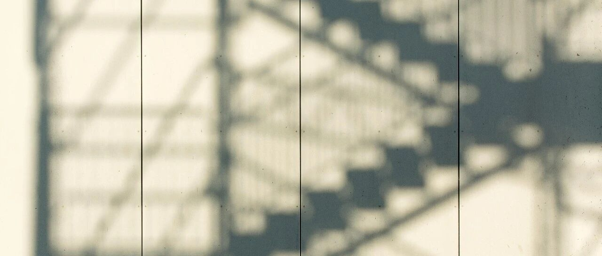

说两句心里话
这两天没更新，因为说了些老爷们不太爱听的话。以后我会尽量不说。
得益于这一轮中时代的眷顾，我这两年的资产体量已经翻倍，不是一倍的那种。个人的资产分布比例，之前写过。
一直以来，都希望自己能言行一致，去实践自己的认知，去调整自己的认知。
现在的环境，说实话，个人挺不喜欢的，可能跟我经历过好时代有关。人怀念过去，并不是因为过去有多好，而是现在太…
过去20个月里，送别了很多很多的朋友，每次看着搭载的飞机冲天而起，飞向远方；再回顾身后，以夹头为代表的民粹主义盛行，我坚定的故土信念，也曾多次动摇过，这是实话。
希望我们的营商环境能越来越好，这对绝大多数人都是有好处的。别等到铁锤砸到你身上时，才猛然痛醒，那时已经太迟了。
大饼我已经说了一年三个月，它从1.8万美刀，一路到今天的6.26万美刀，我逢高减持，今天已经正式跨入0成本区间。
英伟达站上800刀，微软一度站上420刀…我分别减持了些，现在持有科技七巨头中的五个，成本都已经降到两位数内。
港股腾讯和大A茅台，我最近都没操作，放着，准备等分红后再看情况决定减持程度。
对了，最近部分银行的理财产品，底层逻辑有了些变化，里面有城投债等，大家购买的时候，要了解清楚再慎重购买。
今年开始，到期的城投债规模比往年大很多，用这种方式有利于化解城投债风险，后续不排除大量银行参与其中。嗯，我只能这么说。
挺希望这类产品，银行可以告知投资人真实的风险的，但很难。具体的风险不知或不说，这才是常态，我想，最难的莫过于底层的百姓了。
2015年之前，我们的印钞锚定的是外汇结算，外面赚回来多少外汇，在内对应印多少人民币；2015年后，锚定物变成了债务……棚改货币化等有很多人都经历过。
算了，就此打住，再说下去，我也要没了。
挺怕民粹主义的，咱自认为是个很爱国的人，创造就业岗位、助学、助农、慈善等都在做。但有些狗东西张口就来，龇牙咧嘴上来就胡乱咬人。
甚至一上来就扣帽子…拜托，做个有正常认知的人吧，这有利于你生活得好点，起码在物质和精神上是这样。
不要做个有认知障碍的“人”，这样往往既穷，又没有认知，很容易成为信息茧房的深度受害者而不自知，从而断绝了自己的上升通道和成长成才的可能性。
之前写的书内容没过审，跟大家说下。具体就是内容不太合适，我又不愿意违背本意去把它修改得面目全非的，所以干脆就不出了。
后续，我会把一些内容放在公众号上，这个具体我再想想怎么做比较好。
就这样吧。